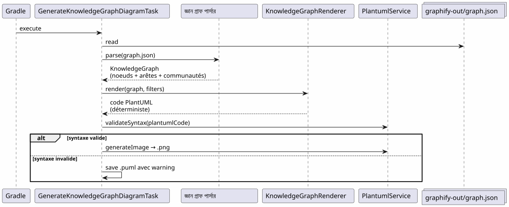
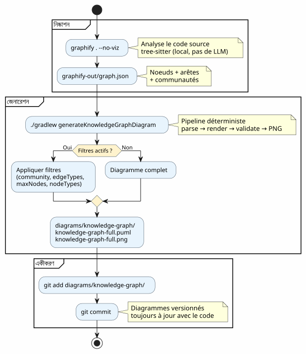
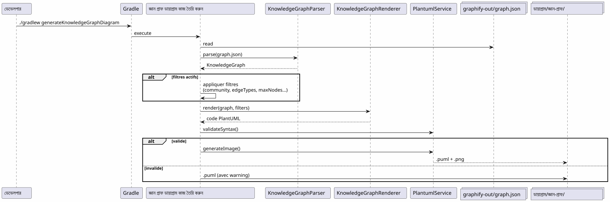

গ্রেডল ওয়ার্কফ্লোতে Graphify সংহত করুন : Knowledge Graph থেকে PlantUML ডায়াগ্রাম পর্যন্ত একটি কমান্ডে
Publié le 19 April 2026
- সমস্যা: ডায়াগ্রামগুলো সর্বদা কোডের পিছনে থাকে।
- সমাধান : একটি নিয়মিত পাইপলাইন Knowledge Graph → PlantUML
- ধাপ ১: Graphify ইনস্টল কর এবং Knowledge Graph বের কর
- ধাপ ২ : গ্রেডল প্লাগইন নোলেজ গ্রাফটি প্লান্টউএমএলে রূপান্তর করে
- ধাপ ৩ : দৈনন্দিন ব্যবহার
- গ্রেডল ওয়ার্কফ্লোতে সম্পূর্ণ পাইপলাইন
- ডগফুডিং : প্লাগইন নিজের ডকুমেন্ট তৈরি করে
- কেন এটি নির্ধারিত (এবং কেন এটি Barrow)
- পাইপলাইনের নিজের ডায়াগ্রাম
- প্রকল্প গভর্নেন্সে ইন্টিগ্রেশন
- সেটআপ : 5 মিনিটের চেকলিস্ট
- পাতাল এবং শमन
- শেষে যা পাওয়া যায়
- লিংক
আপনার কোডবেস বাড়ছে। মডিউলের মধ্যে নির্ভরতাগুলি গুণাগুণে বাড়ছে। আর্কিটেকচার ডকুমেন্টেশন এখনও লেখা হয় তা পুরনো হয়ে যায়। এবং যদি আপনার Gradle বিল্ড স্বয়ক্রিয়ভাবে বাস্তব কোডের গঠন থেকে আপডেটেড ডায়াগ্রাম তৈরি করতে পারত? এটিই সঠিকভাবে যা Graphify + PlantUML Gradle প্লাগইন পাইপলাইন করে:`graphify . --no-viz`Knowledge Graph.extract করে,`./gradlew generateKnowledgeGraphDiagram`এটিকে PlantUML ডায়াগ্রামে রূপান্তর করে। শূন্য LLM, শূন্য ম্যানুয়াল, ১০০% নির্ধারিত।
- টিক
-
[]
সমস্যা: ডায়াগ্রামগুলো সর্বদা কোডের পিছনে থাকে।
কয়েক হাজার লাইনের বেশি যে কোন প্রকল্প এই সিনড্রোমকে ভোগ করে:
-
প্রকল্পের শুরুতে একটি আর্কিটেকচার ডাইয়াগ্রাম আঁকা হয়
-
কোডটি বিকশিত হচ্ছে, নির্ভরতাগুলি পরিবর্তিত হচ্ছে
-
ডায়াগ্রামটি একটি সজোড় মিথ্যা হয়ে যায়
-
কে এইটা আপডেট করে না, কারণ এইটা কষ্টকর
-
নতুন লোকরা এটায় নির্ভর করে কাজ করেন এবং ভুল করেন।

প্রশ্নটি কি ডায়াগ্রাম প্রয়োজন? — সবাই জানে যে হ্যাঁ। প্রশ্নটি হল:কে তাদের আপ-টু-ডেট রাখে?
উত্তর: কেউ নয়। যদি এটি স্বয়ংক্রিয় না হয়।
সমাধান : একটি নিয়মিত পাইপলাইন Knowledge Graph → PlantUML
নিয়মটি সহজ: হাতে ডায়াগ্রাম আঁকে বদলে, আমরা তাদেরকোডের প্রকৃত কাঠামো থেকে উৎপন্ন করে.
Failed to generate image: PlantUML preprocessing failed: [From <input> (line 6) ] @startuml skinparam backgroundColor #FEFEFE skinparam componentStyle rectangle actor Développeur component "গ্রাফিফাই ^^^^^ Syntax Error? (Assumed diagram type: sequence) @startuml skinparam backgroundColor #FEFEFE skinparam componentStyle rectangle actor Développeur component "গ্রাফিফাই (pip install graphifyy)" as Graphify collections "graphify-out/graph.json (জ্ঞান গ্রাফ)" as KGJSON component "PlantUML Gradle প্লাগইন\n(generateKnowledgeGraphDiagram)" as Plugin component "KnowledgeGraphParser" as Parser component "জ্ঞান গ্র্যাফ রেন্ডারার" as Renderer component "PlantumlService (যাচাই + পিএনজি রেন্ডার)" as PS collections "diagrams/knowledge-graph/\n(.puml + .png)" as Output Développeur --> Graphify : graphify . --no-viz Graphify --> KGJSON : extrait la structure\ndu code source Développeur --> Plugin : ./gradlew generateKnowledgeGraphDiagram Plugin --> Parser : parse(graph.json) Parser --> Plugin : KnowledgeGraph\n(noeuds + arêtes + communautés) Plugin --> Renderer : render(graph, filters) Renderer --> Plugin : code PlantUML\ndéterministe Plugin --> PS : validateSyntax + generateImage PS --> Output : .puml + .png note bottom of Plugin Pipeline DÉTERMINISTE Aucun appel LLM Résultat reproductible end note @enduml
দুটি কমান্ড। এটাই সব।
# Étape 1 : extraire le Knowledge Graph
graphify . --no-viz
# Étape 2 : générer les diagrammes PlantUML
./gradlew generateKnowledgeGraphDiagramফল? কিছু ফাইল`.puml` et .png dans diagrams/knowledge-graph/, গিট-এ সংস্করণबंधিত, সবসময় কোডের সাথে আপ টু ডেট。
ধাপ ১: Graphify ইনস্টল কর এবং Knowledge Graph বের কর
ইনস্টলেশন
Graphify একটি Python টুল যা আপনার কোডবেস বিশ্লেষণ করে এবং একটি কাঠামোগত জ্ঞান গ্রাফ নির্মাণ করে :
# Méthode recommandée
uv tool install graphifyy && graphify install --platform opencode
# Alternative avec pip
pip install graphifyy && graphify install --platform opencodeব্যাহত্যাবরণ কনফিগার করুন
একটি ফাইল তৈরি করুন`.graphifyignore`প্রজেক্টের মূলে, ব্যবসায়িক লজিকের অংশ না হওয়া ফাইলগুলো বাদ দেওয়ার জন্য:
# Secrets — JAMAIS dans le graphe
*-context.yml
*.env
# Fichiers générés
build/
.gradle/
# Tests fonctionnels
src/functionalTest/নালেজ গ্রাফ নিষ্কাশন করা
graphify . --no-vizফ্ল্যাগ`--no-viz`HTML জেনারেশনটি স্কিপ করুন (Gradle পাইপলাইনে অপ্রয়োজনীয়)। ফলাফলটি একটি ফাইল`graphify-out/graph.json`Shamīl :
-
বন্ধন: ক্লাস, ফাংশন, ফাইল — তাদের ধরন এবং সম্প্রদায়
-
মাছের কাঁটানোডের মধ্যে संबंध (EXTRACTED কোড से, INFERRED LLM由谁？)
-
সম্প্রদায়: স্বয়ংক্রিয় সংযুক্ত নোডের গোষ্ঠী
{
"nodes": [
{"id": "0", "label": "LlmService", "file_type": "code", "community": 0},
{"id": "1", "label": "ApiKeyPool", "file_type": "code", "community": 0},
{"id": "2", "label": "PlantumlService", "file_type": "code", "community": 1}
],
"links": [
{"source": "1", "target": "0", "relation": "uses", "confidence": "EXTRACTED", "weight": 0.9},
{"source": "0", "target": "2", "relation": "calls", "confidence": "INFERRED", "weight": 0.7}
]
}|
উৎস কোড ( |
ধাপ ২ : গ্রেডল প্লাগইন নোলেজ গ্রাফটি প্লান্টউএমএলে রূপান্তর করে
পাইপলাইনের আর্কিটেকচার
প্লাগইন`com.cheroliv.plantuml`একটি কাজ অন্তর্ভুক্ত করে`generateKnowledgeGraphDiagram`যে রূপান্তর করে`graph.json`প্ল্যান্টইউএমল ডায়াগ্রামে ভাবেসম্পূর্ণরূপে నిర్ధారಿತ :

ভিতরের উপাদান
| কম্পোনেন্ট | ভุมিকা |
|---|---|
|
পার্স`graph.json`— সমর্থন করে ৩ ফরম্যাট : graphify natif ( |
|
নির্ধারকভাবে একটি রূপান্তর করে`KnowledgeGraph`PlantUML কোডে। টাইপ অনুযায়ী গোষ্ঠী, প্যাকেজে কমিউনিটি, স্বয়ংচালিত লেজেন্ড। |
|
Gradle টাস্ক যা পার্স → রেন্ডার → বৈধতা যাচাই → PNG তৈরি করে। Gradle বৈশিষ্ট্যসমূহের মাধ্যমে কনফিগারযোগ্য। |
|
ডেটা মডেল :`KnowledgeGraph`, |
|
সিনট্যাক্স যাচাই + PNG রেন্ডারিং (প্লাগইনের সমস্ত কাজে পুনঃব্যবহারযোগ্য). |
রেন্ডারিং নিয়ম
রেন্ডারার ডিটারমিনিস্টিক ভিজ্যুয়াল কনভেনশন প্রয়োগ করে:
| কেৰের ধরন | নোটেশন PlantUML | অর্থ |
|---|---|---|
নিষ্কাশিত |
|
সোর্স কোড থেকে নিষ্কাশিত সম্পর্ক (নিশ্চয়তা) |
অনুমানিত |
|
LLM tarafından অনুমানিত সম্পর্ক (বিশ্বাসের স্কোর) |
অস্পষ্ট |
|
অস্পষ্ট সম্পর্ক (যাচাই করতে হবে) |
সমুদয়গুলোকে স্বয়ংক্রিম রঙ প্যালেট সহ PlantUML প্যাকেজের মতো প্রদর্শিত করা হয়।
ধাপ ৩ : দৈনন্দিন ব্যবহার
সম্পূর্ণ ডায়াগ্রাম
# Générer le diagramme du Knowledge Graph complet
./gradlew generateKnowledgeGraphDiagramআউটপুট :`diagrams/knowledge-graph/knowledge-graph-full.puml`+.png
কমিউনিটি অনুযায়ী ফিল্টার করুন
# Une seule communauté
./gradlew generateKnowledgeGraphDiagram \
-Pplantuml.kg.community=community_0
# Limiter le nombre de noeuds (lisibilité)
./gradlew generateKnowledgeGraphDiagram \
-Pplantuml.kg.community=community_0 \
-Pplantuml.kg.maxNodes=15এজের প্র컬 অনুযায়ী फिल्टर
# Uniquement les relations certaines (EXTRACTED)
./gradlew generateKnowledgeGraphDiagram \
-Pplantuml.kg.edgeTypes=EXTRACTED
# Relations certaines + inférées
./gradlew generateKnowledgeGraphDiagram \
-Pplantuml.kg.edgeTypes=EXTRACTED,INFERREDনোডের ধরন এবং বিশ্বাস অনুযায়ী ফিল্টার করুন
# Uniquement les classes de code
./gradlew generateKnowledgeGraphDiagram \
-Pplantuml.kg.nodeTypes=code
# Seuil de confiance minimum (pour les INFERRED)
./gradlew generateKnowledgeGraphDiagram \
-Pplantuml.kg.minConfidence=0.7কাস্টম আউটপুট ডিরেক্টরি
./gradlew generateKnowledgeGraphDiagram \
-Pplantuml.kg.outputDir=docs/architectureপ্রপার্টির সম্পূর্ণ রেফারেন্স
| স্বত্ব | ডিফল্ট | বিবরণ |
|---|---|---|
|
(সব) |
নাম অনুযায়ী সম্প্রদায় ফিল্টার করুন (উপস্ট্রিং মিল) |
|
(সব) |
किनারের প্রকার, কমা দিয়ে পৃথক :`EXTRACTED`, |
|
|
এজের জন্য ন্যূনতম আত্মবিশ্বাসের সীমা |
|
(অসীম) |
প্রদর্শন করতে নোডের সর্বোচ্চ সংখ্যা |
|
(সকল) |
কমা দিয়ে পৃথক করা নোডের ধরন (উদা. |
|
|
ফাইলদের জন্য আউটপুট ডিরেক্টরি`.puml` et |
গ্রেডল ওয়ার্কফ্লোতে সম্পূর্ণ পাইপলাইন
কর্মপ্রবাহের ধরন

ডেভেলপমেন্ট চক্রে একীকরণ
পাইপলাইনটি স্বাভাবিকভাবে উন্নয়নের মূল পর্যায়গুলিতে ইন্টিগ্রেট হয় :
Failed to generate image: PlantUML preprocessing failed: [From <input> (line 5) ] @startuml skinparam backgroundColor #FEFEFE state "বিকাশ" as dev state "Extraction ^^^^^ Syntax Error? (Assumed diagram type: state) @startuml skinparam backgroundColor #FEFEFE state "বিকাশ" as dev state "Extraction graphify . --no-viz" as extract state "উৎপাদন ./gradlew generateKnowledgeGraphDiagram" as generate state "Commit সংস্কারিত আকস" as commit [*] --> dev dev --> extract : Code modifié extract --> generate : graph.json à jour generate --> commit : .puml + .png générés commit --> dev : Diagrammes dans le repo note right of extract Quasi instantané sur du code Kotlin (tree-sitter, pas de LLM) end note note right of generate Déterministe Pas de LLM Résultat reproductible end note @enduml
অনক্রমিক আপডেট
কোড পরিবর্তন হলে, আমরা পুরো গ্রাফকে শূন্য থেকে পুনঃনির্মাণ করি না :
# Mise à jour incrémentale (fichiers modifiés uniquement)
graphify . --update
# Puis régénérer les diagrammes
./gradlew generateKnowledgeGraphDiagram|
|
ডগফুডিং : প্লাগইন নিজের ডকুমেন্ট তৈরি করে
PlantUML প্লাগইন প্রম্পটগুলোকে ডায়াগ্রামে রূপান্তর করে। এটি בנוסף নিজের propre codebase-ের Knowledge Graphকে ডকুমেন্টেশন ডায়াগ্রামে রূপান্তর করতে পারে। এটি dogfooding : প্লাগইন তার নিজের পরিষেবা ব্যবহার করে।
Failed to generate image: PlantUML preprocessing failed: [From <input> (line 6) ]
@startuml
skinparam backgroundColor #FEFEFE
skinparam componentStyle rectangle
package "পাইপলাইন স্বাভাবিক
(ব্যবহারকারী → নকশা)" as normal {
^^^^^
Syntax Error? (Assumed diagram type: activity)
@startuml
skinparam backgroundColor #FEFEFE
skinparam componentStyle rectangle
package "পাইপলাইন স্বাভাবিক
(ব্যবহারকারী → নকশা)" as normal {
[Fichier .prompt] as prompt
[LlmService\n+ ApiKeyPool] as llm1
[ProcessPlantumlPromptsTask] as task1
[Diagramme PNG] as out1
prompt --> task1
task1 --> llm1
llm1 --> out1
}
package "Pipeline Knowledge Graph
(নির্ধারিত, LLM নেই)" as kg {
[graphify-out/graph.json] as kgjson
[KnowledgeGraphParser] as parser
[KnowledgeGraphRenderer] as renderer
[PlantumlService] as ps
[Diagramme PNG\n(documentation du plugin)] as out2
kgjson --> parser
parser --> renderer
renderer --> ps
ps --> out2
}
package "Pipeline Dogfooding
(LLM → প্লাগইন ডকুমেন্টেশন)" as dogfood {
[GraphifyPromptAdapter] as gpa
[Fichiers .prompt\nauto-générés] as auto_prompt
[LlmService\n+ ApiKeyPool] as llm2
[ProcessPlantumlPromptsTask] as task2
[Diagramme PNG\n(documentation LLM)] as out3
kgjson --> gpa
gpa --> auto_prompt
auto_prompt --> task2
task2 --> llm2
llm2 --> out3
}
note "একই LlmService, একই ApiKeyPool,
একই PlantumlService
— শূন্য ডুপ্লিকেশন" as N
@enduml
Gradle-তে সম্পর্কিত কাজ :
| টাস্ক | LLM ? | বর্ণনা |
|---|---|---|
|
না |
পরিবর্তন করো`graph.json`PlantUML-এ (নির্ধারিত) |
|
হ্যাঁ |
জেনারেট করো`.prompt`গ্রাফ থেকে, সেগুলোকে LLM-কে (dogfooding) ব্যবহার করে প্রক্রিয়া করে |
# Documentation déterministe (rapide, pas de LLM)
./gradlew generateKnowledgeGraphDiagram
# Documentation LLM (plus riche, consomme des tokens)
./gradlew generateDiagramDocsকেন এটি নির্ধারিত (এবং কেন এটি Barrow)
পাইপলাইনের মূল পয়েন্ট`generateKnowledgeGraphDiagram`:সে কোনো LLM কল করে না. পরিবর্তন`graph.json`PlantUML একটি শুদ্ধ ফাংশন।
Failed to generate image: PlantUML preprocessing failed: [From <input> (line 6) ]
@startuml
skinparam backgroundColor #FEFEFE
skinparam componentStyle rectangle
rectangle "নির্ধারিত পাইপলাইন
(generateKnowledgeGraphDiagram)" as det {
^^^^^
Syntax Error? (Assumed diagram type: activity)
@startuml
skinparam backgroundColor #FEFEFE
skinparam componentStyle rectangle
rectangle "নির্ধারিত পাইপলাইন
(generateKnowledgeGraphDiagram)" as det {
[graph.json] as json
[KnowledgeGraphParser] as parser
[KnowledgeGraphRenderer] as renderer
[PlantUML code] as puml
json --> parser : parse
parser --> renderer : KnowledgeGraph
renderer --> puml : render (fonction pure)
}
rectangle "Pipeline LLM
(processPlantumlPrompts)" as llm {
[.prompt] as prompt
[LlmService] as llmSvc
[ChatModel] as model
[PlantUML code] as puml2
prompt --> llmSvc
llmSvc --> model : API call
model --> puml2 : réponse non-déterministe
}
note bottom of det
Même entrée → même sortie
Pas de latence réseau
Pas de coût en tokens
Reproductible en CI
end note
note bottom of llm
Même entrée → sortie variable
Latence réseau (1-5s)
Coût en tokens
Nécessite une clave API
end note
@enduml
বাস্তব সুবিধাগুলো :
| লাভ | প্রভাব |
|---|---|
প্রত্যাবৃত্তিমূলকতা |
একই`graph.json`→ একই চিত্র। সঠিকভাবে। প্রতিবার। |
শূন্য খরচ |
LLM কল নেই = টোকেন নেই = API বিল নেই। |
শূন্য লেটেন্সি |
Parse + render ~100ms-এ নেয়, ১-৫ সেকেন্ড না। |
সামঞ্জস্যপূর্ণ CI |
API কি দরকার নেই। ভিন্ন LLM প্রতিক্রিয়ার কারণে ফ্লকি টেস্ট নেই। |
সংস্করণযোগ্য |
Le |
পাইপলাইনের নিজের ডায়াগ্রাম
লুপটি বন্ধ করতে, প্লাগইন দ্বারা তৈরি হওয়া পাইপলাইনের ডায়াগ্রাম এখানে দেওয়া হল:

প্রকল্প গভর্নেন্সে ইন্টিগ্রেশন
আমাদের প্রজেক্টে, এই পাইপলাইনটি AI এজেন্টের জন্য EAGER/LAZY কনটেক্সট ম্যানেজমেন্ট রণনীতির অংশ হিসেবে একত্রিত হয়। নালেজ গ্রাফ হাতনির্দেশিত আর্কিটেকচার ডকুমেন্টেশনকে একটি গঠনগত, কুয়েরি योग্য এবং স্বয়ং আপডেটযোগ্য গ্রাফ দিয়ে প্রতিস্থাপন করে।
Failed to generate image: PlantUML preprocessing failed: [From <input> (line 6) ]
@startuml
skinparam backgroundColor #FEFEFE
skinparam componentStyle rectangle
package "উৎসাহী
(সবসময় চার্জিত)" as eager {
^^^^^
Syntax Error? (Assumed diagram type: activity)
@startuml
skinparam backgroundColor #FEFEFE
skinparam componentStyle rectangle
package "উৎসাহী
(সবসময় চার্জিত)" as eager {
[PROMPT_REPRISE.adoc\n(contexte session)] as pr
[INDEX.adoc\n(vue d'ensemble)] as idx
[GRAPH_REPORT.adoc\n(~50 lignes)] as gr
}
package "LAZY — কৌশল
(অনুরোধে)" as lazy_strat {
[Méthodologies] as meth
[Archives sessions] as sessions
}
package "LAZY — Graphify
(লক্ষিত প্রশ্ন)" as lazy_graph {
[graph.json] as gj
[Queries\n(query/path/explain)] as queries
}
package "পাইপলাইন PlantUML
(স্বয়ংক্রিয়ভাবে তৈরি)" as puml {
[generateKnowledgeGraphDiagram] as kgTask
[generateDiagramDocs] as ddTask
[Diagrammes PNG] as diagrams
}
Agent --> eager : Lit en début de session
Agent ..> lazy_strat : Charge si type détecté
Agent ..> lazy_graph : Query si besoin structurel
kgTask --> diagrams : Déterministe
ddTask --> diagrams : Via LLM
note right of gr
Condensé du Knowledge Graph
God nodes + communautés
Remplace ECOSYSTEM_OVERVIEW
(225 lignes → 50 lignes)
end note
@enduml
দুটি পদ্ধতির সংমিলন পরিপূরক :
-
স্ট্র্যাটেজি কখন এবং কিভাবে পরিচালনা করে— শাসন, কর্মপ্রবাহ, সংরক্ষণ
-
Graphify কী এবং কোথায় পরিচালনা করে— কোডের গঠন, সম্পর্ক, লক্ষ্য করা কুয়েরি
__ সেশন কৌশলটি পরিচালনা করেকখন et le কেমন(শাসন, কর্মপ্রবাহ, সীমা), Graphify এটি পরিচালনা করেকি et le কোথায়(কোডের গঠন, সম্পর্ক, লক্ষ্য করা কোয়েরি)। প্ল্যান্টুএমল পাইপলাইনটি পরিচালনা করেকি দিয়ে(নির্ণեյ ডায়াগ্রাম, সংস্করণযোগ্য, সর্বদা আপ-টু-ডেট) (output nothing)
সেটআপ : 5 মিনিটের চেকলিস্ট
| </think> (No text provided to translate) | ধাপ | অর্ডার |
|---|---|---|
1 |
Graphify installation korun |
|
2 |
ব্যাখ্যাগুলি কনফিগার করুন |
সৃষ্টি করা`.graphifyignore` |
3 |
Knowledge Graph নিষ্কাশন করুন |
|
4 |
ডায়াগ্রামগুলো তৈরি করুন |
|
5 |
ফলাফলগুলো কমিট করুন |
|
# Script complet en 5 commandes
uv tool install graphifyy
cat > .graphifyignore << 'EOF'
*-context.yml
*.env
build/
.gradle/
EOF
graphify . --no-viz
./gradlew generateKnowledgeGraphDiagram
git add graphify-out/GRAPH_REPORT.adoc graphify-out/graph.json diagrams/knowledge-graph/পাতাল এবং শमन
| পাঁজ | বিবরণ | প্রশমন |
|---|---|---|
অতিঘন গ্রাফ |
একটি বড় প্রকল্প শতকটি অপঠনযোগ্য নোড তৈরি করে |
ব্য�্যবহার করা`-Pplantuml.kg.maxNodes=30`এবং সম্প্রদায় অনুযায়ী ফিল্টার করুন |
অতিরিক্তভাবে বিস্তৃত বর্জন |
অনেক বেশি ফাইল এর মধ্যে`.graphifyignore`গ্রাফের মানকে কমায় |
শুধুমাত্র credentials এবং build বর্জন করে শুরু করুন |
তীরদের দিক |
এজগুলো INFERRED এর একটি অস্পষ্ট দিশা থাকতে পারে। |
অনুযায়ী ফিল্টার`-Pplantuml.kg.edgeTypes=EXTRACTED`শুধুমাত্র নিশ্চিত সম্পর্কের জন্য |
অপ্রচলিত গ্রাফ |
কোড পরিবর্তিত হয় তবে গ্রাফ পুনঃনির্মাণ হয় না। |
ব্যবহার করা`graphify . --update`নিয়মিতভাবে বা গিট হুক`graphify hook install` |
আপডেট করা খরচ |
ইনক্রিমেন্টাল আপডেটগুলি প্রায় বিনামূল্যে (tree-sitter local) |
শুধুমাত্র ডক্স ( |
শেষে যা পাওয়া যায়
Failed to generate image: PlantUML preprocessing failed: [From <input> (line 6) ]
@startuml
skinparam backgroundColor #FEFEFE
rectangle "আগে" as avant {
card "হাতে আঁকা ডায়াগ্রাম
এই সব সময় অপ্রচলিত
^^^^^
Syntax Error? (Assumed diagram type: activity)
@startuml
skinparam backgroundColor #FEFEFE
rectangle "আগে" as avant {
card "হাতে আঁকা ডায়াগ্রাম
এই সব সময় অপ্রচলিত
কেউ এই ডায়াগ্রামগুলো আপডেট করে না" as av1 #FDEDEC
}
rectangle "পরে" as apres {
card "স্বয়ংক্রিয়ভাবে উত্পন্ন ডায়াগ্রাম
কোডের সাথে সর্বদা আপ-টু-ডেট
গিট-এ ভার্সনকৃত
নির্ধারিত এবং পুনরুত্পাদনযোগ্য" as ap1 #E8F8E8
}
avant --> apres : graphify . --no-viz\n+ ./gradlew generateKnowledgeGraphDiagram
@enduml
বাস্তবীয় সুবিধা :
| লাভ | বিস্তার |
|---|---|
ডকুমেন্টেশন সর্বদা আপ-টু-ডেট |
ঐকতালিক গ্রাফগুলো বর্তমান কোডকে প্রতিফলিত করে, কোনো ম্যানুয়াল স্ন্যাপশট নয়। |
শূন্য রক্ষাবেক্ষণ পরিশ্রম |
ডায়াগ্রামগুলো প্রতিটি বিল্ডে পুনরুত্পন্ন হয় |
প্রযুক্তিগত ঋণের হ্রাস |
ডায়গ্রামগুলো হাতে বজায় রাখার দরকার আর নেই |
নতুনদের জন্য ভিজ্যুয়াল কনটেক্সট |
একজন নতুন ডেভেলপার ডায়াগ্রামগুলো দেখে আর্কিটেকচার বুঝে। |
পটেনশিয়াল ফাইন-টিউনিং |
সাব-গ্রাফ → ডায়াগ্রাম (যুগ) কৃত্রিম বুদ্ধিমত্তা প্রশিক্ষণের উদাহরণ |
স্বয়ংক্রিয় যাচাই |
`PlantumlService.validateSyntax()`প্রতিটি উত্পন্ন ডায়াগ্রাম পরীক্ষা করে |
দ্রুত অনবোর্ডিং |
5 চিত্র = আর্কিটেকচারের সম্পূর্ণ দৃশ্য |
_ যে ব্যক্তির একটি _কেন আছে, সে সকল কীভাবে সহ্য করতে পারে। __
কেন : সর্বгда আপডেট থাকা ডায়াগ্রাম। comment : দুটি কমান্ড یک Gradle পাইপлайনে।
লিংক
-
fg কমান্ডের সুপার টিপস— পূর্বের টার্মিনাল ওয়ার্কফ্লো সম্পর্কে লিখিত